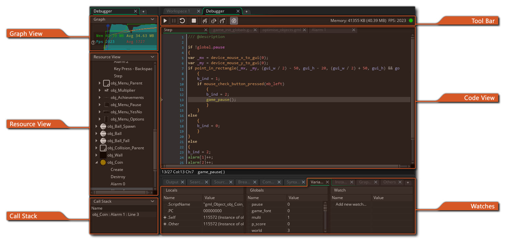
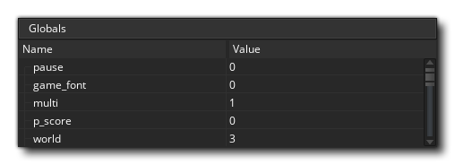
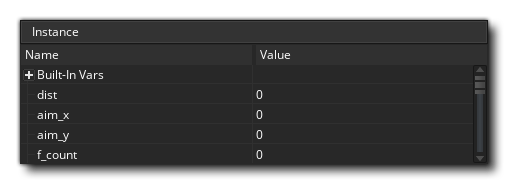
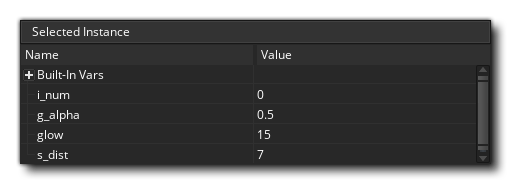
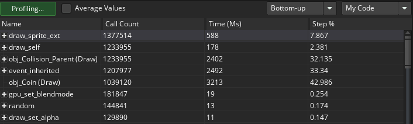

调试器 是一个用于检查游戏的强大工具，对于跟踪代码中的错误和漏洞以及检查脚本应该运行的时间以及包含你期望的值的变量和数组等特别有用。你可以使用 GameMaker Studio 2 IDE 顶部的 调试 按钮  ，或者转到 构建菜单 并选择 “调试” 来运行游戏并启动 “调试器”。
，或者转到 构建菜单 并选择 “调试” 来运行游戏并启动 “调试器”。
在调试模式下运行游戏时，IDE 将显示调试器可用的不同工具： 
上面图像显示了调试器的默认布局，但与 IDE 的其他方面一样，你可以自定义此选项以满足你的需要，关闭你不需要的窗口或更改你需要的文档和窗口的大小。你可以随时从 IDE 顶部的 调试器 上下文菜单重置调试器布局 - 或重新打开关闭的窗口： 
下面我们解释一下调试器的每个部分：
图表 视图显示了项目如何使用内存及其帧率随时间变化的图形显示：:
该图显示了当前和平均内存使用情况以及当前和平均 FPS 随时间的变化，你可以使用
/
和鼠标滚轮
放大或缩小，如果将鼠标光标放在图形元素上， 它将显示所选点上该元素的值。
图表视图还会将某些 调试事件 显示为沿图形长度的点。 这些事件由 GameMaker Studio 2 在游戏运行的某些点自动生成，以显示特定的重要事件，但您也可以使用函数 show_debug_message() 和 debug_event() 添加自己的图元素。 系统事件将以与通过代码触发的事件不同的颜色标记：
在调试中运行游戏并将鼠标移动到这些事件上时，将显示一个列表，其中列出了游戏中该点触发的所有事件，你可以通过单击 “单击在新窗口中打开” 文本将列表拉出到单独的窗口中进行修改：
资源视图 显示项目中正在使用的所有资源的列表，其中包含代码或 DnD™ 动作。此部分与资源树非常相似，你可以展开其中的项目以显示更多信息，例如，特定物体的不同事件。 然后，你可以双击
任何资源，在 代码视图 窗口中打开它的代码，你可以在其中检查值并添加或删除断点。
这个窗口会显示当前事件的调用栈，还有按步跳过代码的行号。在此处显示任何信息之前需要暂停调试器。
工具栏具有调试器控件以及一些基本信息，如内存使用，游戏的当前（真实）FPS 以及显示调试器当前是否已连接的指示器（连接到你的项目正在运行的实例时指示器将为绿色否则为红色）。可用的控件是：

这会在暂停后再次启动游戏（键盘快捷键 f5）。 
这将暂停（中断）游戏。 
重启游戏 停止游戏 
跳入代码块或脚本（键盘快捷键 f11） 
跳过代码块或脚本（键盘快捷键 f10） 
跳出代码块或脚本（键盘快捷键 + f11）

打开或关闭调试信息的实时更新（默认情况下关闭）。 前三个按钮用于控制游戏，允许你随时启动、暂停、重启或停止游戏。通过单击 “暂停” 按钮或从 “断点” 暂停游戏时，你可以使用三个 “步” 按钮逐步执行代码。这意味着你可以告诉你的游戏运行代码中的当前行，之后跳转到下一行。只要你想，就允许你跨越整个游戏来运行一行代码。通常你只需要用 跳入 按钮来做这件事，不过你还有另外两个选择，一个跳过代码和一个跳出代码。当你有大型脚本要运行时，跳过非常有用，因为单击此操作会将整个脚本或代码块作为一个步骤运行，然后在下一行停止，而跳出将使你退出脚本（它们将运行 ，但一下子全部）并在范围改变后的下一步停止。最后的这个图标允许调试窗口实时更新数据，这样的话你就能看见变量如何改变或者实例如何生成与破坏的了。不过要注意这样也许会影响游戏表现，而且并不是所有的信息都会实时有效。例如，无法实时查看 渲染状态 监视（请参阅下面的 “监视器” 部分）。
代码视图是我们在项目运行时可以查看和检查不同脚本或事件代码的地方。 默认情况下，这将开始为空，但你可以双击
你还可以使用鼠标右键
打开上下文菜单，该菜单还允许你添加或删除断点并将任何选定的代码复制到剪贴板。
有关断点的更多信息可以在此页面的下方找到。
调试器的全部思想是允许你 “观察” 游戏的每个细节。这是使用 “监视窗口” 完成的，默认情况下，它是在停靠在 IDE 底部的 输出 窗口中打开的。 你可以单击每个不同的选项卡以查看它们包含的监视器，其中一些将实时更新（如全局监视器），而其他（如局部监视器）则需要调试器暂停游戏。 我们在这里单独列出了每个监视窗口，并说明了它们的作用：

局部 窗口显示当前步属性，其中包括正在运行的当前事件（或脚本）的名称，当前脚本的虚拟机代码中的偏移量（首字母缩写词 “PC” 为 “程序计数器”）， 运行代码块的 “self” 实例，以及事件中的 “other” 实例。当事件是碰撞事件或代码中使用了 with 时，最后一部分才有效。如果实例处于碰撞状态，“other” 将在碰撞中显示另一个实例（及其变量），但如果它使用了 with，那么 “Self” 实例将成为运行代码的实例，而 “Other ”则是实际包含 with 的实例。除此之外的其他时间，“other” 仅会显示与 “self” 相同的数据。在完成所有这些信息之后，你将找到当前步执行的代码块声明的所有 局部 变量的列表。 如果右键单击

全局 窗口将显示当前所有声明的全局变量及其值的列表。 如果右键单击

这个窗口可以让你添加你想一直追踪的特定的变量。追踪的内容可以是一个全局或实例范围的变量，一个内置的变量，甚至数组或数据结构。如果按步跳过的实例代码中包含被监视的变量，那么它就会在这里显示出来。这意味着你可以轻易追踪变量而不用在局部或者全局窗口中查找它。如果右键单击

顾名思义，这个窗口会显示所有实例变量、局部变量和与当前源代码窗口中按步跳过的实例的内置变量。（如果一个实例是用关键词 “other” 或者 with 语句引用来的，那么这个窗口中会显示该实例的属性）。

如果你需要监视所有的当前房间中的实例，你可以选择这个窗口，它们就会被列出来。你还可以查看它们具有的任何内置变量或实例变量的状态，你可以右键单击

这个窗口是为了你在游戏中选择的实例而存在的。暂停游戏，只需要点击游戏窗口中任何可见的实例，你就能实现该功能。在鼠标指针下的实例的信息会显示在选中的实例窗口中，在此处你能看到它的内置信息和实例变量，与实例窗口是一样的。

这个窗口为你显示所有被渲染当前帧的可用信息，例如绘制的透明度或者填充颜色。这不能实时更新，因此你需要暂停游戏以获取和更新帧详细信息。

在此视图中允许你查看到底哪些东西正画在你的表面上（包括应用表面）以及查看内存中的材质页。你可以从监视器底部的纹理或表面中进行选择，然后将鼠标悬停在纹理或表面 ID 上，以使其显示在弹出窗口中。
请注意，在更新之前必须暂停调试器。
该窗口是你查看当前被测试游戏所处系统概况的地方，在此处你能查看你游戏中从整个事件到单独的函数调用中的各种细节，以此了解程序如何表现它们的功能，而麻烦区域或者瓶颈又在哪里。有关分析的更多信息，请参阅本页后面的部分。
如果你在游戏中初始化了缓冲器，这个窗口会给你显示缓冲数据。你可以选择任一使用 缓冲ID 的值产生的缓冲器，其中缓冲 ID 对第一个缓冲器是从 0 开始的，接下来的缓冲器每一个的 ID 加 1。
如果右键单击


重要的是要注意，在游戏运行时，默认情况下它 不会使用变量值和其他详细信息更新调试窗口，因此你必须首先使用调试器中的 暂停 按钮 ，在局部、全局和其他数据可用之前暂停游戏 ，或从顶部的图标启用实时更新 。此规则的唯一例外是 剖析 视图，它在独立于实时开关的情况下实时更新，因为它具有自己的开 / 关按钮。
数据类型
当你观察任何窗口中的变量时，它都可能是数种 数据类型 中的任意一个。但是，由于 GameMaker Studio 2 存储某些内容的方式，调试器并不总是确切知道该变量的含义。 这是因为数据结构或实例的内部 ID 值是整数，因此调试器并不总是知道存储在变量中的整数值是用于数据结构还是实例，或者只是一个整数值。 因此，你可以右键单击  变量值并弹出一个窗口，其中列出了此变量可能存在的可用数据类型。
变量值并弹出一个窗口，其中列出了此变量可能存在的可用数据类型。
字符串和数组不允许使用此选项，值得注意的是，即使数据结构存储在实例变量中，其 ID 号也是 全局 的，因此如果你有四个实例并且每个实例都创建一个 ds_list（例如）， 每个列表的 ID 为从 0 到 3，它们不会同时为 0。
选择数据类型后，只需单击其名称旁边的小写字母 即可显示结构中的变量条目。 这将扩展结构内容，并且在 “监视器” 窗口的情况下，也允许你修改它们。
断点
断点 是项目代码中你希望停止的位置，以便你可以看到正在发生的事情。 在调试器运行的情况下，你可以通过左键单击  行号栏（行号所在的位置）随时在任何代码或脚本块中添加或删除断点，也可以使用鼠标右键
行号栏（行号所在的位置）随时在任何代码或脚本块中添加或删除断点，也可以使用鼠标右键  打开 上下文菜单， 同样可以添加或删除断点：
打开 上下文菜单， 同样可以添加或删除断点：

也可以从 GameMaker Studio 2 IDE 设置断点。 编写项目时，可以使用 f9（或使用鼠标右键  并选择 “开/关断点”）对物体窗口中的动作或代码编辑器窗口中的行添加或删除断点。现在，当你在调试模式运行游戏的时候，它就会在断点停下。从 IDE 中设置的断点与项目一起保存，并且在每次运行中保留，直到删除它。但是，如果在调试器中向代码添加断点，则在关闭模块或启动新测试运行后丢失。请注意，所有断点都将显示在 输出 窗口中，可在其中启用或禁用甚至删除它们。
并选择 “开/关断点”）对物体窗口中的动作或代码编辑器窗口中的行添加或删除断点。现在，当你在调试模式运行游戏的时候，它就会在断点停下。从 IDE 中设置的断点与项目一起保存，并且在每次运行中保留，直到删除它。但是，如果在调试器中向代码添加断点，则在关闭模块或启动新测试运行后丢失。请注意，所有断点都将显示在 输出 窗口中，可在其中启用或禁用甚至删除它们。
剖析）
调试器允许你单步执行代码并查找代码库的任何问题，但有时你需要检查更微妙的详细信息以便正确优化你的游戏。 剖析（Profile） 选项通过为你提供性能概述，显示调用函数、脚本所需的时间，甚至完成特定事件所需的时间来帮助实现此目的。

除了显示所有不同事件、脚本和函数的主窗口外，剖析中还有以下选项：
这是启用或禁用剖析的按钮。启用后，剖析将启动，你将开始看到主窗口中列出的事件、脚本和函数以及每个事件、脚本和函数的不同数据值。 显示此数据的方式取决于时间显示和查看模式（本页后面都有解释）。
此复选框允许你在剖析的平均时间和绝对时间之间切换。如果未选中，则主窗口中显示的值将是对函数，脚本或事件的调用 总数 以及在配置文件过程中所花费的 总 时间（以 毫秒（ms） 为单位）。但是，如果启用此选项，则这些列将显示每个函数、脚本或事件的每步的 平均 时间以及调用它的 平均 次数。
此菜单允许你选择查看模式，可以是 自上而下 或 自下而上。
选择自上而下视图模式将从上到下显示配置文件（与调用栈层次结构大致相同），因此它将显示事件，然后显示脚本，然后显示所使用的函数。请注意，如果有源代码，你可以双击
选择自下而上视图模式将自下而上显示内容，以便你可以单独查看所有函数和脚本调用。使用此视图模式时，单击 将展开函数或脚本以显示实际调用的内容。
查看目标（View Target） 允许你在查看项目 GML（事件和代码数据）与后台引擎进程或两者之间进行选择。 如果你选择 “我的代码”，那么你将获得每步调用的事件、函数和脚本，而 “引擎代码” 视图仅显示项目所需的引擎调用，使你能够看到项目处理问题的方式中的任何瓶颈。如果选择 “组合”，则会显示两组数据，但请注意，当与 “自下而上” 视图结合使用时，不同的脚本和函数调用将嵌套在引擎调用中，你需要单击 展开以便看到它们。
配置文件数据显示在四列中，单击其中任何一列将根据列标准对数据进行排序。

- 名称 - 这是被调用的事件、脚本或函数的名称，旁边可能有一个 表示进一步调用它或从中调用的内容（取决于你选择的视图模式）。
你可以双击 任何名称，使其在 源代码 窗口中打开代码块或脚本。单击此列的顶部将按字母顺序对名称进行排序。
- 时间（毫秒） - 这将显示函数（或脚本、事件）在剖析时所花费的总时间，或者显示每步被调用的平均时间（取决于所选的时间显示选项），并以 毫秒 为单位显示。
- 调用次数 - 你可以在此处查看给定事件、函数或脚本的调用总数，或者在一步中对其进行的平均调用次数（同样，取决于所选的时间显示选项）。
- 构中步 % - 这里显示的值是调用所采取的单步的总体百分比。